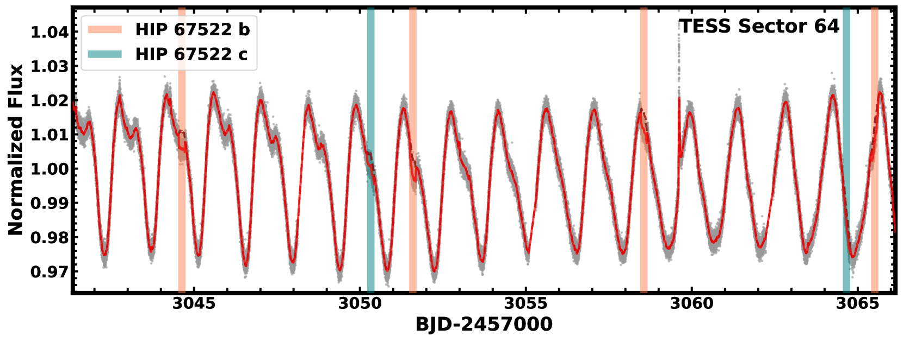
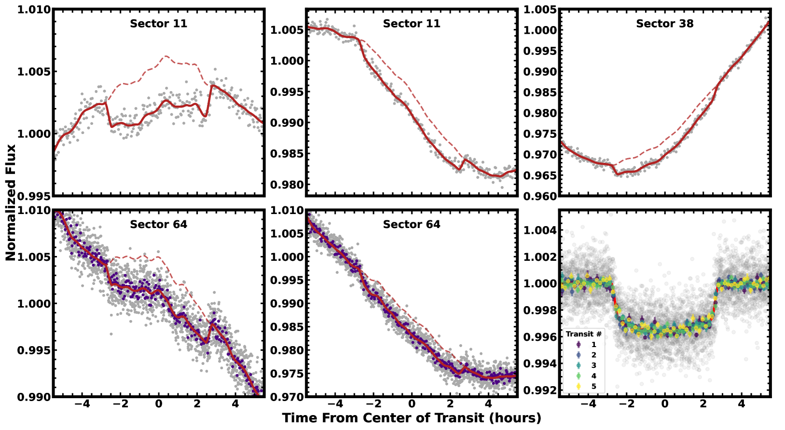
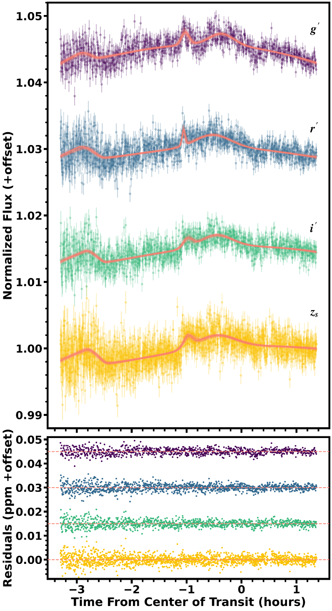
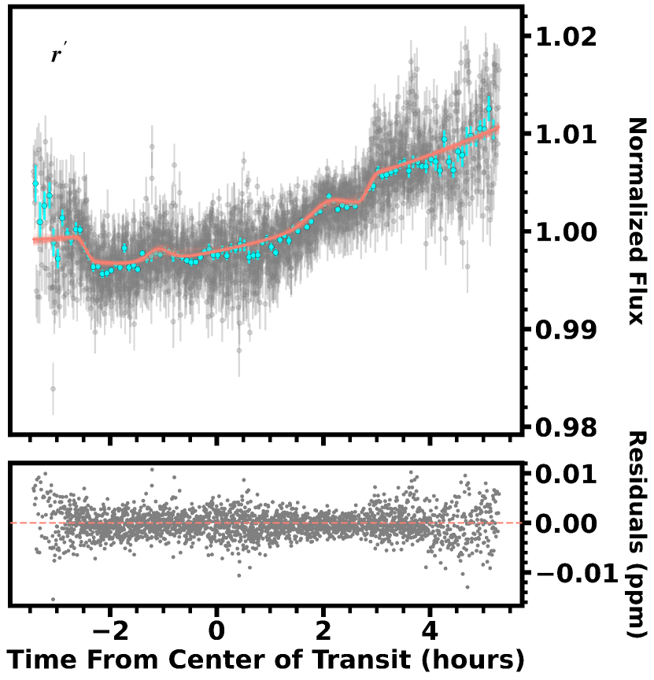
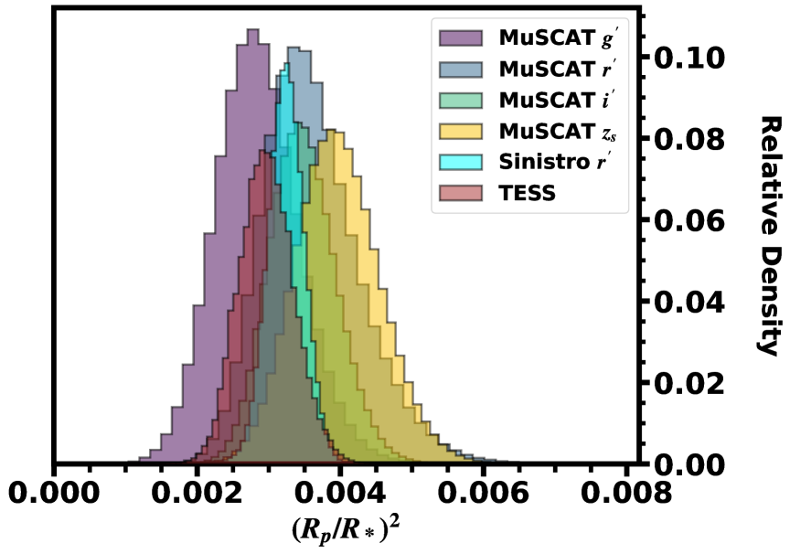

TESS Investigation - Demographics of Young Exoplanets (TI-DYE) II:
a second giant planet in the 17-Myr system HIP 67522
Abstract
The youngest (50 Myr) planets are vital to understand planet formation and early evolution. The 17 Myr system HIP 67522 is already known to host a giant (10) planet on a tight orbit. In the discovery paper, Rizzuto et al. 2020 reported a tentative single transit detection of an additional planet in the system using TESS. Here, we report the discovery of HIP 67522 c which matches with that single transit event. We confirm the signal with ground-based multi-wavelength photometry from Sinistro and MuSCAT4. At a period of 14.33 days, planet c is close to a 2:1 mean motion resonance with b (6.96 days or 2.06:1). The light curve shows distortions during many of the transits, which are consistent with spot crossing events and/or flares. Fewer stellar activity events are seen in the transits of planet b, suggesting that planet c is crossing a more active latitude. Such distortions, combined with systematics in the TESS light curve extraction, likely explain why planet c was previously missed.
1 Introduction
Young ( Myr) planets provide an opportunity to detect planet-sculpting processes as they happen. In particular, young multi-planet systems are valuable because they allow for better control of variables within a single system and enable a wider range of science cases than those with single planets. Such systems enable tests on the origin of intrasystem uniformity (e.g., Lissauer et al., 2011; Lammers et al., 2023), measure more precise planetary eccentricities (e.g., Van Eylen et al., 2019), and search for transit timing variations that may yield precise masses and eccentricities (e.g. Steffen et al., 2012; Masuda, 2014), among a wide range of other science cases.
Stellar, and hence planetary, ages are generally challenging to determine for individual systems (Soderblom et al., 2014). Therefore, planets in stellar associations are critical in understanding planet formation mechanisms, as the planets’ ages can be precisely derived from the parent stellar population. Studies from the small sample of young planets (30) have demonstrated several key findings: some close-in planets either form in situ or migrate quickly (David et al., 2019a; Mann et al., 2022; Wood et al., 2023), young planets tend to be larger than their older counterparts (Fernandes et al., 2022, 2023; Vach et al., 2024), and planets generally form and/or migrate while maintaining alignment with their host star (Hirano et al., 2020; Johnson et al., 2022; Hirano et al., 2024).
TESS has played a critical role in the discovery and characterization of young planetary systems. TESS data was used to discover systems as young as 11 Myr (Mann et al., 2022; Zakhozhay et al., 2022) and young planets as small as (Livingston et al., 2018; Capistrant et al., 2024), as well as aided in the discovery of new young stellar associations hosting transiting planets (e.g, Tofflemire et al., 2021; Nardiello et al., 2022; Thao et al., 2024).
One such important discovery is the young, hot, HIP 67522 b (Rizzuto et al., 2020). The planet was identified using the Notch & LoCoR pipeline (N&L; Rizzuto et al., 2017) and TESS photometry. At 17 Myr, HIP 67522 b stands as one of the youngest transiting planets known. It orbits a bright () G-star in the nearby Scorpius-Centaurus OB association, which made it a prime target for transmission spectroscopy with JWST (Mann et al., 2021), Rossiter-McLaughlin observations (Heitzmann et al., 2021), and studies of atmospheric escape (Milburn et al. in prep).
Rizzuto et al. (2020) noted a single trapezoid-like event in the light curve, consistent with an additional transiting planet (HIP 67522 c). However, they detected no additional transit-like signals and hence could not confirm the signal as planetary in origin. Lacking evidence of another transit, it was assumed the candidate planet had a period 24 days (based on the time from the transit to the end of the sector). Based on the observed transit duration, the estimated orbital period was between 30 and 124 days (with 68% confidence).
Since the discovery, TESS re-observed the HIP 67522 system in two more sectors, and many teams have made improvements in the handling of TESS light curves for young stars (e.g. Capistrant et al., 2024). Using this data and our updated pipeline, we recover the original candidate transit alongside four other consistent transit-like events, yielding a period of 14.33 days (henceforth HIP 67522 c). This places HIP 67522 c close to the 2:1 resonance with HIP 67522 b. The planet’s large size, proximity to a mean-motion resonance, and age make it a compelling target for additional follow-up.
2 TESS light curve
HIP 67522 (TIC 166527623; TOI-6551; HD 120411) was first observed by TESS in Sector 11, from 2019 April 23 to 2019 May 20, and was re-observed in Sector 38 (2021 April 29 - 2021 May 26) and Sector 64 (2023 April 6 - 2023 May 3). The target was pre-selected for 2-minute short-cadence light curves for Sector 11 (G011280, PI A. Rizzuto) and Sector 38 (G03141, PI E. Newton and G03130, PI A. Mann) and 20-second light curves for Sector 64 (G05015, PI B. Hord and G05106, PI E. Gillen). In total, TESS observed five transits of HIP 67522 c.
2.1 Extraction pipeline
For our analysis, we used a custom light curve extraction pipeline starting from Simple Aperture Photometry (SAP; Twicken et al., 2010; Morris et al., 2020) curves produced by the Science Processing Operations Center (SPOC; Jenkins et al., 2016). We used the shortest cadence data available for each sector.
We applied systematic corrections following the prescription in Vanderburg et al. (2019). To summarize, we corrected the SPOC SAP light curves with a linear model consisting of a basis spline (B-spline) with regularly-spaced breaks at 0.2 day intervals to model long-term, low-frequency stellar variability, several moments of the distribution of the spacecraft quaternion time series measurements within each exposure, seven co-trending basis vectors from the SPOC Presearch Data Conditioning (PDC; Stumpe et al., 2012; Smith et al., 2012; Stumpe et al., 2014) band-3 flux time series correction with the largest eigenvalues, and a high-pass (0.1 day) time series from the SPOC background aperture.
We estimated the uncertainties on the flux by taking the median value of three different methods: 1) the median absolute deviation of the point minus the adjacent point; 2) the mean absolute deviation of the flattened light curve (flattened using lightkurve; Lightkurve Collaboration et al., 2018, with a 4 outlier threshold); and 3) sigma clipping, applying a median filter, sigma clipping again, and fitting a Gaussian to the resulting distribution of points. Each method was broadly consistent with each other, and the final results do not depend on the uncertainty estimate. We found the uncertainties for each sector separately and adopted an uncertainty of 0.0007, 0.0009, and 0.0014 for Sectors 11, 38, and 64, respectively.

3 Identification of the transit
As part of our search for transiting planets in the youngest stellar associations (Barber et al. submitted), and motivated by both the single-transit detection in Rizzuto et al. (2020) and the recent transit timing variations (TTVs) detected in HIP 67522 b (Thao et al. submitted), we searched HIP 67522 for additional planet signals. We used the updated N&L pipeline (Rizzuto et al., 2017) as described in Barber et al. (submitted). To summarize, we updated the default box-least squares (BLS) search to the more recent implementation in astropy111http://www.astropy.org (version 4.2; Astropy Collaboration et al., 2018) and used a more optimized period and duration search grid.
Using Notch, we detrended the light curve using a 0.3-day filtering window, which removes the stellar variability using a second-order polynomial while preserving the trapezoidal, transit-like signals. We then searched for repeated signals between 0.5 and 30 days with SNR8 using the BLS. We recovered the 6.9 day signal (HIP 67522 b) at a BLS SNR of 29 and a 14.3 day signal with a BLS SNR of 17 (HIP 67522 c).
Multiple transit signals of HIP 67522 c are visible by eye in both the PDCSAP and systematics-corrected light curves before detrending. However, the original implementation of the N&L BLS did not recover the second planet signal, nor was it detected when using the PDCSAP flux (independent of the BLS implementation). In addition, using the default SPOC SAP or PDSCAP flux yielded transits with inconsistent depths over the full TESS curve. We only recovered the planet when using the updated light curves and the updated BLS implementation, and only obtained a consistent transit signal when using the updated light curves.
Many of the HIP 67522 c transits in the TESS light curve show evidence of local flares or spot crossings (see Figure 2). The second transit in the Sector 11 data contains such an event during mid-transit, causing an irregular transit shape. These distortions are likely a major contributor to the fact that the planet was not recovered in prior searches.
The TESS SPOC search also recovered a signal from HIP 67522 c in a multi-sector search of sectors 11, 38 and 64 conducted on 21 June 2023 with a noise-compensating matched filter (Jenkins et al., 2020), although at significantly lower SNR than the notch-based detection. This elevated the detection to a threshold-crossing event (TCE), but it failed the ghost diagnostic test and was never elevated to a TESS object of interest (TOI).
4 Ground-based follow up
4.1 MuSCAT4
On 2024 April 22, we observed a predicted transit of HIP 67522 c using MuSCAT4 (Multicolor Simultaneous Camera for studying Atmospheres of Transiting exoplanets; Narita et al., 2020) on the 2m Faulkes Telescope South of Las Cumbres Observatory (LCO) at the Siding Spring observatory in Australia. MuSCAT4 has a field of view of 91 91 and a pixel scale of 027 pixel-1. With MuSCAT4, we simultaneously imaged HIP 67522 in the , , , and bands with exposure times of 12, 7, 8, and 5 seconds, respectively. Due to poor weather, we were unable to observe the transit egress.
We extracted the light curves using the standard LCOGT BANZAI pipeline (McCully et al., 2018) and applying a customized aperture-photometry pipeline for MuSCAT data (Fukui et al., 2011). We chose an optimal aperture radius and a set of comparison stars for each band that minimized the dispersion of the light curve.
4.2 Sinistro
We observed a predicted transit of HIP 67522 c on 2024 May 6 simultaneously using three LCO 1m telescopes with the Sinistro cameras. For all observations we used the filter and an exposure time of 10 seconds.
All the images were calibrated using the standard LCOGT BANZAI pipeline. For two of the three data sets, we performed aperture photometry with Photutils and eight comparison stars. For the other data set, we applied aperture photometry using the same pipeline as used for the MuSCAT4 data. The differences between these extractions were minor, and the resulting three light curves were consistent with each other, so we combined them after applying a small y-offset to ensure the median values matched (a correction).
5 Planet properties
5.1 TESS transit fit
We fit the systematics-corrected TESS photometry using MISTTBORN (MCMC Interface for Synthesis of Transits, Tomography, Binaries, and Others of a Relevant Nature; Mann et al., 2016; Johnson et al., 2018), which uses BATMAN to generate model transits (Kreidberg, 2015), celerite to model stellar variability with a Gaussian Process (GP; Foreman-Mackey et al., 2017), and emcee to explore the parameter space (Foreman-Mackey et al., 2013).
We fit both planets (b and c) and the stellar variability simultaneously, with 20 fit parameters in total. For each planet, we fit for the time of periastron (), planet orbital period (), planet-to-star radius ratio (), impact parameter (), and and to account for orbital eccentricity () and the argument of periastron (). We fit both planets with a common stellar density () and triangular limb-darkening coefficients (, ; Kipping, 2013).
The remaining five parameters were used to fit for the stellar variability in the GP model. We used two stochastically-driven damped simple harmonic oscillators (SHOMixture), one fixed to be at half the period of the other (Foreman-Mackey et al., 2017). The free parameters were the GP period (), the GP amplitude (), the quality factor for the simple harmonic oscillators (described by and ), and a mixture term (Mix).
Most parameters evolved under uniform priors with only physical limitations. For and , we found that 1-2 (of 50) walkers would wander off the true transit time, preferring to fit nearby stellar variations or flares as one of the transits. To fix this, we limited both and to within 0.01 days (15 minutes) of the discovery values for c and the values from Rizzuto et al. (2020) for b. This limit is small compared to the final uncertainties and lower than the TTV amplitude (Thao et al. submitted). Visual inspection and comparison to the final parameters suggest this did not introduce any bias (the final uncertainties were much smaller). For , we initialized the value and prior following the stellar parameters in Rizzuto et al. (2020) (/ = ). Using the LDTK toolkit (Parviainen & Aigrain, 2015), we initialized the limb-darkening coefficients ( and ).
We ran the MCMC using 50 walkers for 250,000 steps including a 50,000-step burn in. The total run was more than 50 times the autocorrelation time, indicating the number of steps was sufficient for convergence. We present the best-fit parameters in Table 1 and the phase-folded light curve for HIP 67522 c in Figure 2. We also show a section of the TESS light curve with the GP model and locations of transits of both planets in Figure 1.

| Parameter | Value | |
|---|---|---|
| Stellar Parameters | ||
| () | ||
| GP Parameters | ||
| Mix | ||
| Parameter | b | c |
| Measured Planet Parameters | ||
| (BJD-2457000) | ||
| (days) | ||
| Derived Parameters | ||
| (∘) | ||
| (days) | ||
| () | ||
| (AU) | ||
| (K)† | ||
| (∘) | ||
| assuming zero albedo | ||
5.2 Ground-based transit fits
 |
  |
Our primary goal for the ground-based data was to confirm the transit depth is consistent with wavelength. To this end, we used an MCMC framework with the BATMAN (Kreidberg, 2015) transit model. Each fit included a total of 16 parameters.
In the MuSCAT4 data, there is a perturbation between 2460422.985 and 2460423.05 BJD. Similarly, in the Sinistro simultaneous transits, all three datasets exhibit a small spike in flux around 2460437.445 BJD. As we discuss further in Section 7, these were most likely spot crossings and were also seen in the TESS data. Some events may be flares (particularly the first bump in the MuSCAT4 data), however, our Gaussian spot model (below) described the deviations well.
To model the spot crossings, we used a Gaussian function, following Dai et al. (2017). For each spot, we fit for the spot timing (), the spot amplitude (), and the spot duration ():
| (1) |
We handled the out-of-transit variability using a second-order polynomial, expressed as:
| (2) |
We use an additional free parameter () to capture any underestimated uncertainties. The parameter is an additional fractional uncertainty on the model added in quadrature with the reported uncertainties.
For the transit model, we fit for , , semi-major axis-to-star radius ratio (), orbital inclination (), and two quadratic limb darkening coefficients (, ). For simplicity, we fixed the eccentricity () to zero. We put a Gaussian prior on the parameters and using the result of the TESS fit (Table 1) and on and using the LDTK toolkit (Parviainen & Aigrain, 2015). The remaining parameters, and , were allowed to vary within their physically plausible ranges (e.g., 0 and 0 1).
For each fit, we used 100 walkers for 100,000 steps and a 15,000-step burn in. We fit each of the four bands of the MuSCAT4 data separately, as well as a separate fit to the combined Sinistro light curve.
As a test, we modelled the transits with a BATMAN model and a GP as was done for the TESS data. We found the fits agreed within uncertainties. Similarly, we tried fitting the transits with the BATMAN model and a second-order polynomial, but opting to mask the spot crossing perturbations instead of explicitly modeling them as Gaussians. Again, all depths agreed within uncertainties. That is, our approach to fitting the data did not change any conclusions with respect to the chomaticity of the transit depth.
We show each transit fit and residuals, as well as the transit depth posteriors in Figure 3. We list the best-fit parameters for each transit in Table 2. The depths in each wavelength agreed with each other to .
| Parameter | MuSCAT | MuSCAT | MuSCAT | MuSCAT | Sinistro |
|---|---|---|---|---|---|
| Transit Parameters | |||||
| - (days) | |||||
| (∘) | |||||
| Stellar Variability Parameters | |||||
| Spot Parameters | |||||
| (days) | |||||
| (BJD-2457000) | |||||
| (days) | |||||
| (BJD-2457000) | |||||
6 False positive analysis
For an initial assessment, we use TRICERATOPS (Giacalone & Dressing, 2020; Giacalone et al., 2021), which calculates the probabilities of various transit-like scenarios in a Bayesian framework. Based on the flattened (GP removed) TESS light curves, TRICERATOPS estimated a false-positive probability (FPP) of .
While this appears to validate the planet, a statistical false-positive assessment using the light curve morphology, as with TRICERATOPS, may be complicated by spot-crossings and the need to flatten the data. However, an abundance of other evidence strongly indicates HIP 67522 c is real:
- •
-
•
Follow-up imaging, velocities, and color-magnitude diagram position from Rizzuto et al. (2020) already rule out any eclipsing binary or background star. The overwhelming majority of bound companions bright enough to reproduce the c transit would similarly have been detected in the existing follow-up (Wood et al., 2021).
-
•
The transit depths are consistent across three instruments spanning more than five years and wavelengths from SDSS to . This consistency rules out any realistic stellar or instrumental signal.
-
•
The lack of chromaticity sets tight limits on the color of the source of the transit (Désert et al., 2015). Following Tofflemire et al. (2021), we set a limit of for the host star. A bound companion within this limit will be 20% as bright as the primary in the optical (Bressan et al., 2012). Such a target would be detected in existing high SNR spectra and imaging Wood et al. (2021), and show as an elevated color-magnitude diagram position Rizzuto et al. (2017).
- •
-
•
The detection of TTVs in HIP 67522 b predicted the presence of HIP 67522 c near an integer period ratio. The probability of any false-positive landing near a period ratio by chance is small, and would not explain the TTV seen in HIP 67522 b.
We conclude that the signal from HIP 67522 c is unambiguously a real planet.
7 Summary and Conclusions
We report the discovery and validation of HIP 67522 c, originally identified as a single transit event by Rizzuto et al. (2020). We find HIP 67522 c to be 0.73 (8.2 ) and near the 2:1 mean motion resonance (MMR) with HIP 67522 b. We confirm the period and transit depth with two follow-up ground-based transit observations taken with MuSCAT4 and Sinistro. The HIP 67522 system is now the youngest known transiting multi-planet system to-date.
The TESS fit posterior of planet b and c is suggestive of low eccentricity orbits (0.36 and 0.39 at 95% confidence, respectively); the maximum likelihood solution yields an eccentricity of 0.007 for planet b and 0.004 for planet c, with most of the high-eccentricity tail corresponding to specific values of where variations have low impact on the transit duration. The single transit fit by Rizzuto et al. (2020) found HIP 67522 c favored a higher eccentricity (), but this assumed a planetary period days.
Many of the young transiting multi-planet systems are also near MMR (e.g. AU Mic b & c (9:4) (Plavchan et al., 2020; Martioli et al., 2021), V1289 Tau c & d (3:2) and d & b (2:1) (David et al., 2019b, a; Feinstein et al., 2022), HD 109833 b & c (3:2) (Wood et al., 2023), and TIC 434398831 b & c (5:3) (Vach et al., 2024, in prep). Simulations suggest that planets will form in MMR and will begin to drift once the disk dissipates (5 Myr) (Izidoro et al., 2017), although many mature planets are found at or near MMR (e.g. Steffen & Hwang, 2015). Hamer & Schlaufman (2024) suggest that MMRs should be most common in systems from 10-100 Myr, and Dai et al. (2024) note that such an excess is visible in the known population of young planets.
The transit depth is consistent across wavelengths from SDSS to to within 2, but it is interesting to note the transit depth trends deeper with increasing wavelength. Aside from a statistical coincidence, it may be a bias from the spot crossing and/or additional undetected (and hence not modelled) spot crossings. Alternatively, this may be due to an unocculted hot spot, which will make blue transits appear shallower (e.g.; Rackham et al., 2018).
Our ground-based transits and many of the TESS transits show evidence of spot crossings or local flares, far more than is seen in transits of HIP 67522 b in the TESS data. This suggests that HIP 67522 c crosses a more active latitude of the host star. It may be possible to take advantage of the spot occultations in the TESS transits to derive planetary and spot characteristics (e.g, Morris et al., 2017) and the stellar obliquity (Désert et al., 2011). Simultaneous multi-band photometry, in particular, can be used to better characterize spot coverage and temperature (Mori et al., 2024).
Unfortunately, our single multi-band transit provides only weak constraints on the spot properties. For the second spot, the amplitude is relatively flat with wavelength, which is more consistent with cool (4500 K) spots. Although the relatively large uncertainties make it challenging to break the degeneracy between spot size and temperature.
HIP 67522 b was a Cycle 1 JWST target (Mann et al., 2021). The resulting transmission spectrum showed strong features, with the transit depth varying by 50% in the CO2 and H2O bands, consistent with a low-density planet (Thao et al. submitted). HIP 67522 c is only 20% smaller than HIP 67522 b (0.73 vs 0.90). Assuming it also has a low density, as predicted for such young planets (Owen, 2020), it will be a similarly high-priority target for JWST.
Acknowledgments
The authors wish to thank Halee, Wally, Penny, and Bandit for their invaluable support. M.G.B. was supported by NSF Graduate Research Fellowship (DGE-2040435), the NC Space Grant Graduate Research Fellowship, and the TESS Guest Investigator Cycle 5 program (21-TESS21-0016; NASA Grant number 80NSSC24K0880). P.C.T. was supported by NSF Graduate Research Fellowship (DGE-1650116), the Jack Kent Cooke Foundation Graduate Scholarship, and the JWST GO program (2498). A.W.M. was supported by the NSF CAREER program (AST-2143763) and a grant from NASA’s Exoplanet Reseach Program (XRP 80NSSC21K0393). This work is partly supported by JSPS KAKENHI Grant Number JPJP24H00017 and JSPS Bilateral Program Number JPJSBP120249910.
This paper makes use of data collected by the TESS mission. Funding for the TESS mission is provided by NASA’s Science Mission Directorate. We acknowledge the use of public TESS data from pipelines at the TESS Science Office and at the TESS Science Processing Operations Center. Resources supporting this work were provided by the NASA High-End Computing (HEC) Program through the NASA Advanced Supercomputing (NAS) Division at Ames Research Center for the production of the SPOC data products. TESS data presented in this paper were obtained from the Mikulski Archive for Space Telescopes (MAST) at the Space Telescope Science Institute (STScI).
This work makes use of observations from the Las Cumbres Observatory global telescope network. Some data in the paper are based on observations made with the MuSCAT3/4 instruments, developed by the Astrobiology Center (ABC) in Japan, the University of Tokyo, and Las Cumbres Observatory (LCOGT). MuSCAT3 was developed with financial support by JSPS KAKENHI (JP18H05439) and JST PRESTO (JPMJPR1775), and is located at the Faulkes Telescope North on Maui, HI (USA), operated by LCOGT. MuSCAT4 was developed with financial support provided by the Heising-Simons Foundation (grant 2022-3611), JST grant number JPMJCR1761, and the ABC in Japan, and is located at the Faulkes Telescope South at Siding Spring Observatory (Australia), operated by LCOGT.
References
- Astropy Collaboration et al. (2018) Astropy Collaboration, Price-Whelan, A. M., Sipőcz, B. M., et al. 2018, AJ, 156, 123, doi: 10.3847/1538-3881/aabc4f
- Bressan et al. (2012) Bressan, A., Marigo, P., Girardi, L., et al. 2012, MNRAS, 427, 127, doi: 10.1111/j.1365-2966.2012.21948.x
- Capistrant et al. (2024) Capistrant, B. K., Soares-Furtado, M., Vanderburg, A., et al. 2024, AJ, 167, 54, doi: 10.3847/1538-3881/ad1039
- Dai et al. (2017) Dai, F., Winn, J. N., Yu, L., & Albrecht, S. 2017, The Astronomical Journal, 153, 40
- Dai et al. (2024) Dai, F., Goldberg, M., Batygin, K., et al. 2024, arXiv e-prints, arXiv:2406.06885, doi: 10.48550/arXiv.2406.06885
- David et al. (2019a) David, T. J., Petigura, E. A., Luger, R., et al. 2019a, ApJ, 885, L12, doi: 10.3847/2041-8213/ab4c99
- David et al. (2019b) David, T. J., Cody, A. M., Hedges, C. L., et al. 2019b, AJ, 158, 79, doi: 10.3847/1538-3881/ab290f
- Désert et al. (2011) Désert, J.-M., Charbonneau, D., Demory, B.-O., et al. 2011, ApJS, 197, 14, doi: 10.1088/0067-0049/197/1/14
- Désert et al. (2015) Désert, J.-M., Charbonneau, D., Torres, G., et al. 2015, ApJ, 804, 59, doi: 10.1088/0004-637X/804/1/59
- Feinstein et al. (2022) Feinstein, A. D., David, T. J., Montet, B. T., et al. 2022, The Astrophysical Journal Letters, 925, l2, doi: 10.3847/2041-8213/ac4745
- Fernandes et al. (2022) Fernandes, R. B., Mulders, G. D., Pascucci, I., et al. 2022, AJ, 164, 78, doi: 10.3847/1538-3881/ac7b29
- Fernandes et al. (2023) Fernandes, R. B., Hardegree-Ullman, K. K., Pascucci, I., et al. 2023, AJ, 166, 175, doi: 10.3847/1538-3881/acf4f0
- Foreman-Mackey et al. (2017) Foreman-Mackey, D., Agol, E., Ambikasaran, S., & Angus, R. 2017, AJ, 154, 220, doi: 10.3847/1538-3881/aa9332
- Foreman-Mackey et al. (2017) Foreman-Mackey, D., Agol, E., Ambikasaran, S., & Angus, R. 2017, The Astronomical Journal, 154, 220, doi: 10.3847/1538-3881/aa9332
- Foreman-Mackey et al. (2013) Foreman-Mackey, D., Hogg, D. W., Lang, D., & Goodman, J. 2013, PASP, 125, 306, doi: 10.1086/670067
- Fukui et al. (2011) Fukui, A., Narita, N., Tristram, P. J., et al. 2011, PASJ, 63, 287, doi: 10.1093/pasj/63.1.287
- Giacalone & Dressing (2020) Giacalone, S., & Dressing, C. D. 2020, triceratops: Candidate exoplanet rating tool. http://ascl.net/2002.004
- Giacalone et al. (2021) Giacalone, S., Dressing, C. D., Jensen, E. L. N., et al. 2021, AJ, 161, 24, doi: 10.3847/1538-3881/abc6af
- Hamer & Schlaufman (2024) Hamer, J. H., & Schlaufman, K. C. 2024, AJ, 167, 55, doi: 10.3847/1538-3881/ad110e
- Heitzmann et al. (2021) Heitzmann, A., Zhou, G., Quinn, S. N., et al. 2021, ApJ, 922, L1, doi: 10.3847/2041-8213/ac3485
- Hirano et al. (2020) Hirano, T., Krishnamurthy, V., Gaidos, E., et al. 2020, The Astrophysical Journal Letters, 899, L13, doi: 10.3847/2041-8213/aba6eb
- Hirano et al. (2024) Hirano, T., Gaidos, E., Harakawa, H., et al. 2024, Monthly Notices of the Royal Astronomical Society, 530, 3117, doi: 10.1093/mnras/stae998
- Izidoro et al. (2017) Izidoro, A., Ogihara, M., Raymond, S. N., et al. 2017, MNRAS, 470, 1750, doi: 10.1093/mnras/stx1232
- Jenkins et al. (2020) Jenkins, J. M., Tenenbaum, P., Seader, S., et al. 2020, Kepler Data Processing Handbook: Transiting Planet Search, Kepler Science Document KSCI-19081-003
- Jenkins et al. (2016) Jenkins, J. M., Twicken, J. D., McCauliff, S., et al. 2016, in Society of Photo-Optical Instrumentation Engineers (SPIE) Conference Series, Vol. 9913, Proc. SPIE, 99133E, doi: 10.1117/12.2233418
- Johnson et al. (2018) Johnson, M. C., Dai, F., Justesen, A. B., et al. 2018, MNRAS, 481, 596, doi: 10.1093/mnras/sty2238
- Johnson et al. (2022) Johnson, M. C., David, T. J., Petigura, E. A., et al. 2022, AJ, 163, 247, doi: 10.3847/1538-3881/ac6271
- Kipping (2013) Kipping, D. M. 2013, MNRAS, 435, 2152, doi: 10.1093/mnras/stt1435
- Kreidberg (2015) Kreidberg, L. 2015, PASP, 127, 1161, doi: 10.1086/683602
- Lammers et al. (2023) Lammers, C., Hadden, S., & Murray, N. 2023, MNRAS, 525, L66, doi: 10.1093/mnrasl/slad092
- Lightkurve Collaboration et al. (2018) Lightkurve Collaboration, Cardoso, J. V. d. M., Hedges, C., et al. 2018, Lightkurve: Kepler and TESS time series analysis in Python, Astrophysics Source Code Library. http://ascl.net/1812.013
- Lissauer et al. (2011) Lissauer, J. J., Ragozzine, D., Fabrycky, D. C., et al. 2011, ApJS, 197, 8, doi: 10.1088/0067-0049/197/1/8
- Lissauer et al. (2012) Lissauer, J. J., Marcy, G. W., Rowe, J. F., et al. 2012, ApJ, 750, 112, doi: 10.1088/0004-637X/750/2/112
- Livingston et al. (2018) Livingston, J. H., Dai, F., Hirano, T., et al. 2018, AJ, 155, 115, doi: 10.3847/1538-3881/aaa841
- Mann et al. (2021) Mann, A. W., Gao, P., Kraus, A. L., et al. 2021, The Atmosphere of a 17Myr Old Hot Jupiter, JWST Proposal. Cycle 1
- Mann et al. (2016) Mann, A. W., Gaidos, E., Mace, G. N., et al. 2016, ApJ, 818, 46, doi: 10.3847/0004-637X/818/1/46
- Mann et al. (2022) Mann, A. W., Wood, M. L., Schmidt, S. P., et al. 2022, AJ, 163, 156, doi: 10.3847/1538-3881/ac511d
- Martioli et al. (2021) Martioli, E., Hébrard, G., Correia, A. C. M., Laskar, J., & Lecavelier des Etangs, A. 2021, A&A, 649, A177, doi: 10.1051/0004-6361/202040235
- Masuda (2014) Masuda, K. 2014, ApJ, 783, 53, doi: 10.1088/0004-637X/783/1/53
- McCully et al. (2018) McCully, C., Volgenau, N. H., Harbeck, D.-R., et al. 2018, in Society of Photo-Optical Instrumentation Engineers (SPIE) Conference Series, Vol. 10707, Proc. SPIE, 107070K, doi: 10.1117/12.2314340
- Mori et al. (2024) Mori, M., Ikuta, K., Fukui, A., et al. 2024, Monthly Notices of the Royal Astronomical Society, 530, 167, doi: 10.1093/mnras/stae841
- Morris et al. (2017) Morris, B. M., Hebb, L., Davenport, J. R. A., Rohn, G., & Hawley, S. L. 2017, The Astrophysical Journal, 846, 99, doi: 10.3847/1538-4357/aa8555
- Morris et al. (2020) Morris, R. L., Twicken, J. D., Smith, J. C., et al. 2020, Kepler Data Processing Handbook: Photometric Analysis, Kepler Science Document KSCI-19081-003, id. 6. Edited by Jon M. Jenkins.
- Nardiello et al. (2022) Nardiello, D., Malavolta, L., Desidera, S., et al. 2022, A&A, 664, A163, doi: 10.1051/0004-6361/202243743
- Narita et al. (2020) Narita, N., Fukui, A., Yamamuro, T., et al. 2020, in Society of Photo-Optical Instrumentation Engineers (SPIE) Conference Series, Vol. 11447, Ground-based and Airborne Instrumentation for Astronomy VIII, ed. C. J. Evans, J. J. Bryant, & K. Motohara, 114475K, doi: 10.1117/12.2559947
- Owen (2020) Owen, J. E. 2020, MNRAS, 498, 5030, doi: 10.1093/mnras/staa2784
- Parviainen & Aigrain (2015) Parviainen, H., & Aigrain, S. 2015, MNRAS, 453, 3821, doi: 10.1093/mnras/stv1857
- Plavchan et al. (2020) Plavchan, P., Barclay, T., Gagné, J., et al. 2020, Nature, 582, 497, doi: 10.1038/s41586-020-2400-z
- Rackham et al. (2018) Rackham, B. V., Apai, D., & Giampapa, M. S. 2018, ApJ, 853, 122, doi: 10.3847/1538-4357/aaa08c
- Rizzuto et al. (2017) Rizzuto, A. C., Mann, A. W., Vanderburg, A., Kraus, A. L., & Covey, K. R. 2017, AJ, 154, 224, doi: 10.3847/1538-3881/aa9070
- Rizzuto et al. (2020) Rizzuto, A. C., Newton, E. R., Mann, A. W., et al. 2020, AJ, 160, 33, doi: 10.3847/1538-3881/ab94b7
- Rowe et al. (2014) Rowe, J. F., Bryson, S. T., Marcy, G. W., et al. 2014, ApJ, 784, 45, doi: 10.1088/0004-637X/784/1/45
- Smith et al. (2012) Smith, J. C., Stumpe, M. C., Van Cleve, J. E., et al. 2012, PASP, 124, 1000, doi: 10.1086/667697
- Soderblom et al. (2014) Soderblom, D. R., Hillenbrand, L. A., Jeffries, R. D., Mamajek, E. E., & Naylor, T. 2014, in Protostars and Planets VI, ed. H. Beuther, R. S. Klessen, C. P. Dullemond, & T. Henning, 219–241, doi: 10.2458/azu_uapress_9780816531240-ch010
- Steffen & Hwang (2015) Steffen, J. H., & Hwang, J. A. 2015, MNRAS, 448, 1956, doi: 10.1093/mnras/stv104
- Steffen et al. (2012) Steffen, J. H., Fabrycky, D. C., Ford, E. B., et al. 2012, MNRAS, 421, 2342, doi: 10.1111/j.1365-2966.2012.20467.x
- Stumpe et al. (2014) Stumpe, M. C., Smith, J. C., Catanzarite, J. H., et al. 2014, PASP, 126, 100, doi: 10.1086/674989
- Stumpe et al. (2012) Stumpe, M. C., Smith, J. C., Van Cleve, J. E., et al. 2012, PASP, 124, 985, doi: 10.1086/667698
- Thao et al. (2024) Thao, P. C., Mann, A. W., Barber, M. G., et al. 2024, The Astronomical Journal, 168, 41, doi: 10.3847/1538-3881/ad4993
- Tofflemire et al. (2021) Tofflemire, B. M., Rizzuto, A. C., Newton, E. R., et al. 2021, AJ, 161, 171, doi: 10.3847/1538-3881/abdf53
- Twicken et al. (2010) Twicken, J. D., Clarke, B. D., Bryson, S. T., et al. 2010, in Society of Photo-Optical Instrumentation Engineers (SPIE) Conference Series, Vol. 7740, Software and Cyberinfrastructure for Astronomy, ed. N. M. Radziwill & A. Bridger, 774023, doi: 10.1117/12.856790
- Vach et al. (2024) Vach, S., Zhou, G., Huang, C. X., et al. 2024, AJ, 167, 210, doi: 10.3847/1538-3881/ad3108
- Valizadegan et al. (2023) Valizadegan, H., Martinho, M. J. S., Jenkins, J. M., et al. 2023, AJ, 166, 28, doi: 10.3847/1538-3881/acd344
- Van Eylen et al. (2019) Van Eylen, V., Albrecht, S., Huang, X., et al. 2019, AJ, 157, 61, doi: 10.3847/1538-3881/aaf22f
- Vanderburg et al. (2019) Vanderburg, A., Huang, C. X., Rodriguez, J. E., et al. 2019, ApJ, 881, L19, doi: 10.3847/2041-8213/ab322d
- Wood et al. (2021) Wood, M. L., Mann, A. W., & Kraus, A. L. 2021, The Astronomical Journal, 162, 128, doi: 10.3847/1538-3881/ac0ae9
- Wood et al. (2023) Wood, M. L., Mann, A. W., Barber, M. G., et al. 2023, AJ, 165, 85, doi: 10.3847/1538-3881/aca8fc
- Zakhozhay et al. (2022) Zakhozhay, O. V., Launhardt, R., Trifonov, T., et al. 2022, A&A, 667, L14, doi: 10.1051/0004-6361/202244747